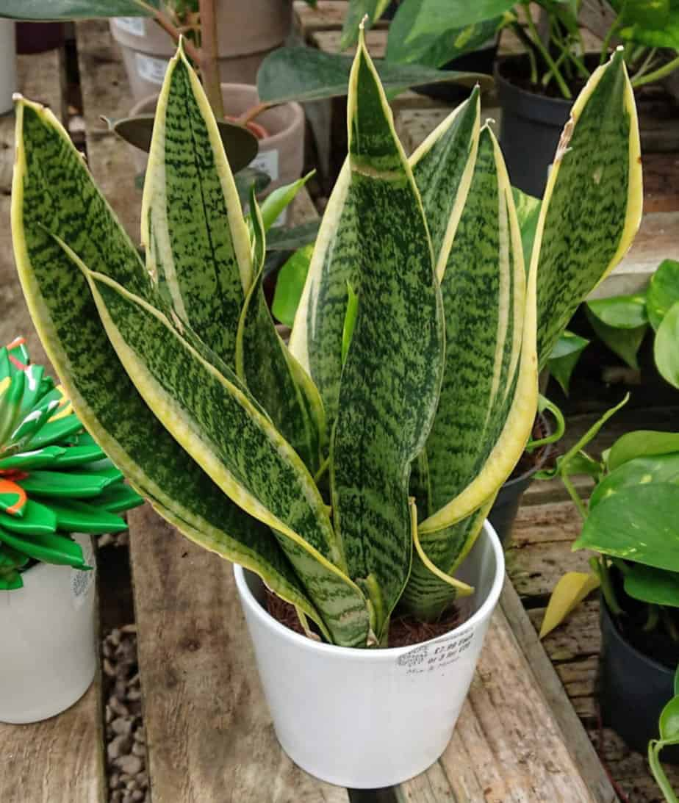

Explore The Plants

Snake Plant
Sansevieria
Pothos
Epipremnum aureum
An all-in-one platform to identify plants, explore their varieties, and their care

Caused by bacteria, fungi or viruses.
Caused by environment or nutrition issues.
MyPlant is a simple and user-friendly platform designed to help plant lovers identify plants, understand their diseases, and learn the best care practices. Our goal is to make plant care easier by providing useful information such as plant identification, weather-based tips, reminders, and disease awareness. This project was developed as an educational frontend project, focusing on clean design, usability, and accessibility, using modern web technologies to create an enjoyable learning experience..